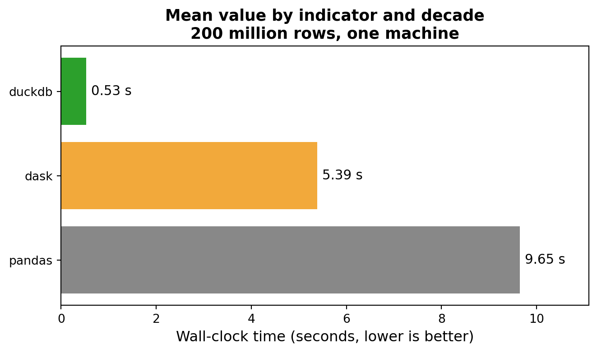

┌─────────┬─────────┬────────────────┬───────┬──────────────────┐
│ country │ iso3 │ indicator │ year │ value │
│ varchar │ varchar │ varchar │ int16 │ double │
├─────────┼─────────┼────────────────┼───────┼──────────────────┤
│ Aruba │ ABW │ co2_per_capita │ 1990 │ 3.20303411789078 │
│ Aruba │ ABW │ co2_per_capita │ 1991 │ 3.43571688721622 │
│ Aruba │ ABW │ co2_per_capita │ 1992 │ 3.6345192377364 │
│ Aruba │ ABW │ co2_per_capita │ 1993 │ 3.41453484426953 │
│ Aruba │ ABW │ co2_per_capita │ 1994 │ 3.68322701204975 │
└─────────┴─────────┴────────────────┴───────┴──────────────────┘DATASCI 350 - Data Science Computing
Lecture 22 - SQL Revision with DuckDB
Hello again! 😊
Brief recap 📚
Parallel computing fundamentals
- Last class: parallel and scalable computing
map,joblibandconcurrent.futures- Parallelism divides the time, but not the Big O growth rate
- Amdahl’s law: the serial share caps the speed-up
- Dask: lazy arrays and DataFrames bigger than RAM
- Parquet stores each column separately, so engines read only the columns you name
- Some engines use all your cores with no setup
- DuckDB is one, and today we use it to revise SQL
- All queries run on the WDI panel from Lecture 19
- Download it here or use the path
../lecture-19/data/wdi_panel.parquet
Lecture overview
1. Why SQL and why DuckDB
- You describe the answer, the engine plans the work
import duckdbis the whole setup
2. First queries
SELECT,WHERE,ORDER BY,LIMITIN,BETWEEN,LIKE, and the order a query runs in
3. Aggregating
COUNT,AVG,GROUP BY,HAVING- What
COUNTdoes when values are missing
4. NULLs, CASE and windows
IS NULL,COALESCE, income bands withCASE- Window functions: a group mean and a rank on every row
5. Joins
- Primary keys, foreign keys, and the
ONclause INNER,LEFT,FULL OUTERon two tiny tables
6. DuckDB and pandas
- Querying a
pandasDataFrame by name - Handing a result back with
.df()
Why SQL, why DuckDB 🦆
Why SQL
- SQL queries relational data: tables of rows and columns, linked by joins
- It is declarative: you say what you want, and the engine decides how
- No loops, variables or input/output code
- The engine can reorder the query, skip columns, or use every core
- SQL is about fifty years old, and job adverts list it about as often as Python
SELECT,WHERE,GROUP BYandJOINwork the same in DuckDB, SQLite, PostgreSQL, BigQuery and Snowflake
DuckDB’s SQL introduction: https://duckdb.org/docs/stable/sql/introduction
Why DuckDB for a revision class
- Zero setup:
pip install duckdb, thenimport duckdb - In-process: it runs inside Python, like SQLite, with no server, user or password, unlike PostgreSQL
- Reads data by name: a Parquet or CSV path, or a pandas DataFrame, goes straight in
FROM - Columnar and parallel, so the same
GROUP BYworks on 200 million rows - Version used here: DuckDB 1.5.5. Every query runs unchanged on 2.0
Source: https://duckdb.org
First queries
What a table is
- A table is a grid: rows are observations, columns are variables
- Each column has one type. Ours are
VARCHAR(text),SMALLINT(whole numbers) andDOUBLE(decimals) - Other common types:
BOOLEAN(true or false),DATE(a day) andTIMESTAMP(a day and a time) - Each cell holds one value, or
NULL - The WDI panel: 217 countries, 8 indicators, 1990 to 2023
valueholds every number, andindicatorsays what it measures- Filter on
indicatorfirst, or you mix dollars with years of life - In pandas: a table is a DataFrame, a column a Series, and there is no index
Six rows of the panel:
| country | iso3 | indicator | year | value |
|---|---|---|---|---|
| Brazil | BRA | gdp_per_capita | 2019 | 8771.44 |
| Brazil | BRA | gdp_per_capita | 2020 | 8435.01 |
| Brazil | BRA | internet_users_pct | 2019 | 73.91 |
| Brazil | BRA | internet_users_pct | 2020 | 81.34 |
| Brazil | BRA | life_expectancy | 2019 | 75.81 |
| Brazil | BRA | life_expectancy | 2020 | 74.51 |
No two rows share the same country, indicator and year. Together they identify a row: the idea behind a primary key
Querying a Parquet file
- The WDI panel is a Parquet file with 59,024 rows
- Download it here or use
../lecture-19/data/wdi_panel.parquet duckdb.sql()runs a query string and returns a result you can print- The path goes in single quotes: single quotes mean text, double quotes a column name
- No
read_parquet, connection orfetchall()needed - The column types under the names come from the file
Creating a view
- A view is a saved query that behaves like a table
CREATE OR REPLACE VIEW wdi AS ...names it, so later queries sayFROM wdi- A view holds no data: DuckDB re-reads the file each time
- It disappears when Python restarts
OR REPLACEoverwrites an old view, so the cell is safe to re-runCOUNT(DISTINCT country)counts the different values in a column
┌────────┬───────────┬────────────┐
│ n_rows │ countries │ indicators │
│ int64 │ int64 │ int64 │
├────────┼───────────┼────────────┤
│ 59024 │ 217 │ 8 │
└────────┴───────────┴────────────┘DESCRIBE and SUMMARIZE
- Run both before writing a query, to learn the column names
DESCRIBElists the columns and their typescountry,iso3andindicatorareVARCHAR, so filter them with single quotesSUMMARIZEadds min, max, count and the share of missing valuesvalueis 11.06% missing.countryandyearhave no gapsvaluemixes all eight indicators, so its min (0% internet use in 1990) and max (India’s population in 2023) mean little- Its result is a table, so we can
SELECTfrom it - In pandas:
df.dtypesanddf.describe()
┌─────────────┬─────────────┬─────────┬─────────┬─────────┬─────────┐
│ column_name │ column_type │ null │ key │ default │ extra │
│ varchar │ varchar │ varchar │ varchar │ varchar │ varchar │
├─────────────┼─────────────┼─────────┼─────────┼─────────┼─────────┤
│ country │ VARCHAR │ YES │ NULL │ NULL │ NULL │
│ iso3 │ VARCHAR │ YES │ NULL │ NULL │ NULL │
│ indicator │ VARCHAR │ YES │ NULL │ NULL │ NULL │
│ year │ SMALLINT │ YES │ NULL │ NULL │ NULL │
│ value │ DOUBLE │ YES │ NULL │ NULL │ NULL │
└─────────────┴─────────────┴─────────┴─────────┴─────────┴─────────┘┌─────────────┬─────────────┬──────────────┬─────────────────┐
│ column_name │ min │ max │ null_percentage │
│ varchar │ varchar │ varchar │ decimal(9,2) │
├─────────────┼─────────────┼──────────────┼─────────────────┤
│ country │ Afghanistan │ Zimbabwe │ 0.00 │
│ year │ 1990 │ 2023 │ 0.00 │
│ value │ 0.0 │ 1438069596.0 │ 11.06 │
└─────────────┴─────────────┴──────────────┴─────────────────┘SELECT, aliases, ORDER BY, LIMIT
- Upper case is a convention: keywords and column names ignore case, so
selectandCountrywork too SELECTlists the columns you want, and*means all of them- It can compute new columns, like
ROUND(value, 0) ASgives a column a new name, called an aliasORDER BY value DESCsorts high to low.ASC(low to high) is the defaultLIMITkeeps the first rows, like.head()in pandas
┌─────────────┬───────┬──────────┐
│ country │ year │ gdp_pc │
│ varchar │ int16 │ double │
├─────────────┼───────┼──────────┤
│ Monaco │ 2020 │ 161263.0 │
│ Luxembourg │ 2020 │ 105274.0 │
│ Bermuda │ 2020 │ 98846.0 │
│ Isle of Man │ 2020 │ 86595.0 │
│ Switzerland │ 2020 │ 86294.0 │
└─────────────┴───────┴──────────┘WHERE with AND, OR and NOT
WHEREkeeps rows where the condition is true, like boolean indexing in pandas- Comparisons:
=,<>(not equal),<,<=,>,>= ANDneeds both sides true,ORneeds eitherNOTflips a condition:NOT country = 'Japan'would keep only Brazil- Text matches are case-sensitive
- The brackets matter, because
ANDruns beforeOR
┌─────────┬───────┬─────────┐
│ country │ year │ gdp_pc │
│ varchar │ int16 │ double │
├─────────┼───────┼─────────┤
│ Brazil │ 2000 │ 6818.0 │
│ Brazil │ 2020 │ 8435.0 │
│ Japan │ 2000 │ 31779.0 │
│ Japan │ 2020 │ 35363.0 │
└─────────┴───────┴─────────┘Without the brackets, the query returns 496 rows: GDP for every country in 2000, all of Brazil’s 2020 rows, and every Japanese row
IN and BETWEEN
INreplaces a chain ofORs on one columncountry IN ('Brazil', 'China')meanscountry = 'Brazil' OR country = 'China'BETWEENincludes both ends: 2018 to 2020 covers three years- The low end goes first.
BETWEEN 2020 AND 2018returns nothing - In pandas:
.isin([...])and.between(2018, 2020) - Six countries × three years = 18 rows.
LIMIT 6shows Brazil and China
┌─────────┬───────┬─────────┐
│ country │ year │ gdp_pc │
│ varchar │ int16 │ double │
├─────────┼───────┼─────────┤
│ Brazil │ 2018 │ 8722.0 │
│ Brazil │ 2019 │ 8771.0 │
│ Brazil │ 2020 │ 8435.0 │
│ China │ 2018 │ 9799.0 │
│ China │ 2019 │ 10356.0 │
│ China │ 2020 │ 10573.0 │
└─────────┴───────┴─────────┘LIKE and ILIKE
LIKEmatches part of a text value%means any characters, or none._means exactly one'United%'starts with United,'%States'ends with States,'%King%'contains KingDISTINCTremoves duplicates. Without it, each country appears once per indicator and yearLIKEis case-sensitive, so'united%'finds nothing.ILIKEignores case- In pandas:
.str.startswith()or.str.contains()
┌──────────────────────┐
│ country │
│ varchar │
├──────────────────────┤
│ United Arab Emirates │
│ United Kingdom │
│ United States │
└──────────────────────┘Every clause in one query
| Clause | What it does |
|---|---|
FROM wdi |
picks the table |
WHERE |
keeps 6 of 59,024 rows |
SELECT |
picks 3 columns, rounds one |
ORDER BY |
sorts by value |
LIMIT |
keeps 3 rows |
- You have met every clause here
- Read a query from
FROM, because that is where the engine starts - Three rows survive: the United States (59,534), Germany (42,373) and Japan (35,363)
- We build on this query for the rest of the lecture
┌───────────────┬───────┬─────────┐
│ country │ year │ gdp_pc │
│ varchar │ int16 │ double │
├───────────────┼───────┼─────────┤
│ United States │ 2020 │ 59534.0 │
│ Germany │ 2020 │ 42373.0 │
│ Japan │ 2020 │ 35363.0 │
└───────────────┴───────┴─────────┘How the engine evaluates a query

- You write
SELECTfirst, but the engine runs it fifth FROMfinds the rows,WHEREfilters them,GROUP BYmakes groups,HAVINGfilters groups, thenSELECTbuilds the outputORDER BYsorts whatSELECTproduced, andLIMITruns last of all
- An aggregate cannot go in
WHERE: the groups do not exist yet - pandas writes the steps in this order:
df[mask].groupby(...).agg(...)
Aggregating
GROUP BY
- An aggregate function turns many rows into one number:
COUNT,SUM,AVG(mean),MIN,MAX - Without
GROUP BY, the whole table is one group, so one row GROUP BY countrymakes six groups, so six rows- Every column in
SELECTmust be inGROUP BYor inside an aggregateSELECT country, value ... GROUP BY countryfails: SQL will not pick one of 14 values
nis 14: the years 2010 to 2023- In pandas:
.groupby("country").agg(...) - Two grouping columns give one row per pair: Appendix 03
┌───────────────┬───────┬──────────┐
│ country │ n │ mean_gdp │
│ varchar │ int64 │ double │
├───────────────┼───────┼──────────┤
│ United States │ 14 │ 58330.0 │
│ Germany │ 14 │ 42448.0 │
│ Japan │ 14 │ 35682.0 │
│ China │ 14 │ 9017.0 │
│ Brazil │ 14 │ 8923.0 │
│ India │ 14 │ 1694.0 │
└───────────────┴───────┴──────────┘WHERE and HAVING
WHEREfilters rows before grouping.HAVINGfilters groups afterWHEREcannot use an aggregate.HAVINGcan, because the groups exist by then- “Which years count?” is about rows, so it goes in
WHERE - “Which countries qualify?” is about groups, so it goes in
HAVING HAVING AVG(value) > 30000drops China (9,017), Brazil (8,923) and India (1,694)ORDER BYcan use the aliasmean_gdp, because it runs afterSELECT
┌───────────────┬───────┬──────────┐
│ country │ n │ mean_gdp │
│ varchar │ int64 │ double │
├───────────────┼───────┼──────────┤
│ United States │ 14 │ 58330.0 │
│ Germany │ 14 │ 42448.0 │
│ Japan │ 14 │ 35682.0 │
└───────────────┴───────┴──────────┘Try it yourself: fix the query
- Run the query on the right
- Read the error message
- Fix one thing, then run it again
- Repeat until it works
- There are five bugs: three easy, two harder
- Errors and answers: Appendix 09
COUNT(*) and COUNT(value)
COUNT(*)counts rows,COUNT(value)only rows wherevalueis present- The difference is the number of missing values
AVG,SUM,MINandMAXskip missing values without warning- Missing GDP falls over time: 25 of 217 countries in 1990, 18 in 2000, 9 in 2020
- In pandas:
len(df)againstdf["value"].count() - Check this before you trust a mean
┌───────┬────────┬────────────┬─────────┐
│ year │ n_rows │ with_value │ missing │
│ int16 │ int64 │ int64 │ int64 │
├───────┼────────┼────────────┼─────────┤
│ 1990 │ 217 │ 192 │ 25 │
│ 2000 │ 217 │ 199 │ 18 │
│ 2020 │ 217 │ 208 │ 9 │
└───────┴────────┴────────────┴─────────┘NULLs, CASE and windows
Missing values
- NULL means “unknown”, not zero or an empty string
- Any comparison with NULL gives NULL, so
NULL = NULLnever matches - Test with
IS NULLorIS NOT NULL COALESCE(a, b)returnsa, orbifais NULL- Yemen has no 2020 GDP figure, so it shows 0 here
- Filling with 0 is a choice, and a mean over this column would be wrong
COALESCEfills a missing value. A missing row needs aLEFT JOIN- In pandas, NULL is
NaN, and.fillna(0)does this
┌───────────────┬────────────┐
│ country │ gdp_filled │
│ varchar │ double │
├───────────────┼────────────┤
│ Brazil │ 8435.0 │
│ China │ 10573.0 │
│ Germany │ 42373.0 │
│ India │ 1807.0 │
│ Japan │ 35363.0 │
│ United States │ 59534.0 │
│ Yemen, Rep. │ 0.0 │
└───────────────┴────────────┘CASE
CASEis an if-else ladder insideSELECTWHENgives a condition, andTHENthe value if it holds- Tests run top to bottom, and the first true one wins
ELSEcatches the rest, andENDcloses the ladder- Without
ELSE, unmatched rows get NULL - The cut-offs are the World Bank’s FY24 bands, set for GNI per capita, so here they are a rough guide
- Without the
IS NULLline, Yemen would fall toELSEas “Low income” - The result is a new column you can group, join or export
duckdb.sql("""
SELECT country, ROUND(value, 0) AS gdp_pc,
CASE
WHEN value IS NULL THEN 'No data'
WHEN value >= 13846 THEN 'High income'
WHEN value >= 4466 THEN 'Upper middle'
WHEN value >= 1136 THEN 'Lower middle'
ELSE 'Low income'
END AS income_band
FROM wdi
WHERE indicator = 'gdp_per_capita' AND year = 2020
AND country IN ('Brazil', 'China', 'Germany', 'India',
'Japan', 'United States', 'Yemen, Rep.')
ORDER BY value DESC NULLS LAST
""")┌───────────────┬─────────┬──────────────┐
│ country │ gdp_pc │ income_band │
│ varchar │ double │ varchar │
├───────────────┼─────────┼──────────────┤
│ United States │ 59534.0 │ High income │
│ Germany │ 42373.0 │ High income │
│ Japan │ 35363.0 │ High income │
│ China │ 10573.0 │ Upper middle │
│ Brazil │ 8435.0 │ Upper middle │
│ India │ 1807.0 │ Lower middle │
│ Yemen, Rep. │ NULL │ No data │
└───────────────┴─────────┴──────────────┘Window functions
- A window function keeps every row and adds a group number beside it
OVERturns an aggregate into a window functionPARTITION BY yearmakes one window, a set of rows, per yearGROUP BY yearwould collapse these 12 rows into 2. Here, no rows are lostyear_meanrepeats on each row of its year: 20,885 in 2000, 26,347 in 2020- In pandas:
.groupby("year")["value"].transform("mean")
duckdb.sql("""
SELECT country, year, ROUND(value, 0) AS gdp_pc,
ROUND(AVG(value) OVER (PARTITION BY year), 0)
AS year_mean
FROM wdi
WHERE indicator = 'gdp_per_capita'
AND country IN ('Brazil', 'China', 'Germany',
'India', 'Japan', 'United States')
AND year IN (2000, 2020)
ORDER BY year, value DESC
""")┌───────────────┬───────┬─────────┬───────────┐
│ country │ year │ gdp_pc │ year_mean │
│ varchar │ int16 │ double │ double │
├───────────────┼───────┼─────────┼───────────┤
│ United States │ 2000 │ 48616.0 │ 20885.0 │
│ Germany │ 2000 │ 35104.0 │ 20885.0 │
│ Japan │ 2000 │ 31779.0 │ 20885.0 │
│ Brazil │ 2000 │ 6818.0 │ 20885.0 │
│ China │ 2000 │ 2237.0 │ 20885.0 │
│ India │ 2000 │ 757.0 │ 20885.0 │
│ United States │ 2020 │ 59534.0 │ 26347.0 │
│ Germany │ 2020 │ 42373.0 │ 26347.0 │
│ Japan │ 2020 │ 35363.0 │ 26347.0 │
│ China │ 2020 │ 10573.0 │ 26347.0 │
│ Brazil │ 2020 │ 8435.0 │ 26347.0 │
│ India │ 2020 │ 1807.0 │ 26347.0 │
└───────────────┴───────┴─────────┴───────────┘
12 rows 4 columnsRanking with a window
RANK()numbers rows by theORDER BYinsideOVER- The inner
ORDER BYsets the ranks, the outer one sorts the printed table - No
PARTITION BY, so one window covers the whole result. AddPARTITION BY yearto rank within each year - Ties share a rank and skip the next: 1, 2, 2, 4
- There are variants that handle ties differently.
RANK()is the one you’ll use most - The United States ranks 1 (59,534), and India 6 (1,807)
WHEREruns first, so only these six countries are ranked
┌───────────────┬─────────┬───────────┐
│ country │ gdp_pc │ rank_2020 │
│ varchar │ double │ int64 │
├───────────────┼─────────┼───────────┤
│ United States │ 59534.0 │ 1 │
│ Germany │ 42373.0 │ 2 │
│ Japan │ 35363.0 │ 3 │
│ China │ 10573.0 │ 4 │
│ Brazil │ 8435.0 │ 5 │
│ India │ 1807.0 │ 6 │
└───────────────┴─────────┴───────────┘Joins
Two small tables
- A table stores its data, unlike the
wdiview CREATE TABLE ... AS SELECTbuildsgdp2020from a queryCREATE TABLE (col TYPE, ...)declares empty columnsINSERT INTO ... VALUESadds rows- A primary key identifies each row, with no duplicates or NULLs:
iso3inregions - A foreign key points at another table’s primary key.
iso3ingdp2020plays that role - We never declare it, so
JPNcan sit there with no partner - Six rows in
gdp2020, seven inregions - Mismatches:
JPNis not inregions.KORandAUSare not ingdp2020 - East Asia holds two codes, which matters in the exercise
duckdb.sql("""
CREATE OR REPLACE TABLE gdp2020 AS
SELECT country, iso3, ROUND(value, 0) AS gdp_per_capita
FROM wdi
WHERE indicator = 'gdp_per_capita' AND year = 2020
AND iso3 IN ('USA','BRA','CHN','IND','DEU','JPN')
""")
duckdb.sql("""
CREATE OR REPLACE TABLE regions
(iso3 VARCHAR PRIMARY KEY, region VARCHAR)
""")
duckdb.sql("""
INSERT INTO regions VALUES
('USA', 'North America'), ('BRA', 'Latin America'),
('CHN', 'East Asia'), ('IND', 'South Asia'),
('DEU', 'Europe'), ('KOR', 'East Asia'),
('AUS', 'Oceania')
""")
duckdb.sql("SELECT * FROM regions ORDER BY iso3")┌─────────┬───────────────┐
│ iso3 │ region │
│ varchar │ varchar │
├─────────┼───────────────┤
│ AUS │ Oceania │
│ BRA │ Latin America │
│ CHN │ East Asia │
│ DEU │ Europe │
│ IND │ South Asia │
│ KOR │ East Asia │
│ USA │ North America │
└─────────┴───────────────┘INNER JOIN
- A
JOINcombines two tables: each matching pair of rows becomes one output row ONsays which columns must match:iso3on both sidesAS gandAS rare table aliases.g.countrymeans “countryfromgdp2020”, so prefix every column this way- The join type goes before
JOIN. AnINNER JOIN, the default, keeps only the codes in both tables - Six rows on the left, seven on the right, five out
- Japan drops out (
JPNis not inregions), and so do Korea and Australia (not ingdp2020) - An inner join drops rows without warning, so check your row count after a join
- In pandas:
pd.merge(gdp2020, regions, on="iso3"), wherehow="inner"is the default
┌───────────────┬───────────────┬────────────────┐
│ country │ region │ gdp_per_capita │
│ varchar │ varchar │ double │
├───────────────┼───────────────┼────────────────┤
│ Brazil │ Latin America │ 8435.0 │
│ China │ East Asia │ 10573.0 │
│ Germany │ Europe │ 42373.0 │
│ India │ South Asia │ 1807.0 │
│ United States │ North America │ 59534.0 │
└───────────────┴───────────────┴────────────────┘LEFT JOIN
- A
LEFT JOINkeeps every row of the left table, the one inFROM(gdp2020here) - Six rows: Japan is back, with
NULLforregion - That NULL means “no partner found”. Japan’s 35,363 is unchanged
- Korea and Australia are still missing: they exist only on the right
- The join you will use most: it adds labels without losing rows
- Swap the tables and you get a different answer, as in the exercise
- In pandas:
pd.merge(..., how="left")
┌───────────────┬───────────────┬────────────────┐
│ country │ region │ gdp_per_capita │
│ varchar │ varchar │ double │
├───────────────┼───────────────┼────────────────┤
│ Brazil │ Latin America │ 8435.0 │
│ China │ East Asia │ 10573.0 │
│ Germany │ Europe │ 42373.0 │
│ India │ South Asia │ 1807.0 │
│ Japan │ NULL │ 35363.0 │
│ United States │ North America │ 59534.0 │
└───────────────┴───────────────┴────────────────┘FULL OUTER JOIN
- A
FULL OUTER JOINkeeps every row from both tables, with NULLs where there is no partner - Eight rows: five pairs, plus Japan, Korea and Australia
- Korea and Australia have NULL
countryandgdp_per_capita. Japan has NULL region columns - On these tables: 5 rows from
INNER, 6 fromLEFT, 8 fromFULL OUTER - To choose a join, ask which table must survive whole, and what to do with rows that have no partner
- All three joins side by side: Appendix 05
┌───────────────┬─────────────┬───────────────┬────────────────┐
│ country │ region_iso3 │ region │ gdp_per_capita │
│ varchar │ varchar │ varchar │ double │
├───────────────┼─────────────┼───────────────┼────────────────┤
│ China │ CHN │ East Asia │ 10573.0 │
│ NULL │ KOR │ East Asia │ NULL │
│ Germany │ DEU │ Europe │ 42373.0 │
│ Brazil │ BRA │ Latin America │ 8435.0 │
│ United States │ USA │ North America │ 59534.0 │
│ NULL │ AUS │ Oceania │ NULL │
│ India │ IND │ South Asia │ 1807.0 │
│ Japan │ NULL │ NULL │ 35363.0 │
└───────────────┴─────────────┴───────────────┴────────────────┘Try it yourself: predict the rows
How many rows does each query return? Which rows get a NULL?
regions
| iso3 | region |
|---|---|
| AUS | Oceania |
| BRA | Latin America |
| CHN | East Asia |
| DEU | Europe |
| IND | South Asia |
| KOR | East Asia |
| USA | North America |
gdp2020
| iso3 | country |
|---|---|
| BRA | Brazil |
| CHN | China |
| DEU | Germany |
| IND | India |
| JPN | Japan |
| USA | United States |
Answers: Appendix 10
DuckDB and pandas 🐼
Querying a DataFrame by name
- DuckDB finds
dfamong your Python variables and reads it in memory SELECT COUNT(*) FROM dfgives 59,024, like the Parquet file- The same
SELECTworks on a file, a view or a DataFrame - It works with Polars DataFrames too
- You can join two DataFrames in one query (right)
┌───────┐
│ n │
│ int64 │
├───────┤
│ 59024 │
└───────┘┌─────────┬───────────────┬─────────┐
│ iso3 │ region │ gdp_pc │
│ varchar │ varchar │ double │
├─────────┼───────────────┼─────────┤
│ BRA │ Latin America │ 8435.0 │
│ JPN │ East Asia │ 35363.0 │
└─────────┴───────────────┴─────────┘Handing the result back to pandas
.df()turns a DuckDB result into a pandas DataFrame- Without it, you get a DuckDB result that prints as a text table
.pl()gives a Polars DataFrame, and.to_arrow_table()an Arrow table- SQL returns 18 rows, and
pivotreshapes them into 6 rows by 3 columns - DuckDB has
PIVOTtoo, but reshaping reads more easily in pandas - After
.df(), it is ordinary pandas:.plot(),.to_csv(),seaborn,statsmodels - SQL or pandas? Appendix 06
long = duckdb.sql("""
SELECT country, indicator,
ROUND(value, 1) AS value
FROM df
WHERE year = 2020
AND iso3 IN ('USA', 'BRA', 'CHN',
'IND', 'DEU', 'JPN')
AND indicator IN ('gdp_per_capita',
'life_expectancy',
'internet_users_pct')
""").df()
long.pivot(index="country", columns="indicator",
values="value")| indicator | gdp_per_capita | internet_users_pct | life_expectancy |
|---|---|---|---|
| country | |||
| Brazil | 8435.0 | 81.3 | 74.5 |
| China | 10573.4 | 70.1 | 78.0 |
| Germany | 42372.9 | 89.8 | 81.0 |
| India | 1806.5 | 43.4 | 70.2 |
| Japan | 35363.3 | 90.2 | 84.6 |
| United States | 59533.6 | 90.3 | 77.0 |
Summary
What we learned today
- SQL is declarative: you describe the answer and the engine plans the work
- DuckDB needs one import and reads a Parquet file or a pandas DataFrame by name
- A view names a query.
DESCRIBEandSUMMARIZEshow what is in it WHEREfilters rows,GROUP BYforms groups,HAVINGfilters groups. No aggregate inWHERECOUNT(*)minusCOUNT(value)is the number of missing values
- A NULL means unknown.
COALESCEfills one in, and a missing row needs a join instead CASEbuilds a category column from an if-else ladder- A window function keeps every row:
AVG ... OVER (PARTITION BY year)adds the year mean,RANK()a position - Joins: 5 rows from
INNER, 6 fromLEFT, 8 fromFULL OUTERon the same two tables - On 200 million rows, DuckDB runs the same query in 0.53 seconds: Appendix 07
Thank you very much! 😊
Appendix 📚
Practice at home: GDP by region
How rich is each region, and how much data is it based on?
- Use the
gdp2020andregionstables from the joins section - Report one row per region
- Count how many of that region’s countries have a 2020 GDP figure
- Compute the mean GDP per capita of that region
- Keep every region, including the one with no GDP data at all
- Sort by mean GDP, highest first
- Send the region with no data to the bottom of the list
What to look for:
- Which table goes on the left if every region must survive?
- East Asia has two codes but one GDP figure, so
COUNT(*)andCOUNT(g.country)differ - Oceania has no GDP figure at all
- Six regions come back
Solution: Appendix 01
Appendix 01: Solution to the exercise
regionsgoes on the left, because every region must survive- East Asia has two rows in
regions, butCOUNT(g.country)is 1: Korea’s row has a NULL country COUNT(*)would count that row and report 2- Oceania has no GDP figure: its count is 0 and its mean is NULL
NULLS LASTsends Oceania to the bottom- Six regions, from North America (59,534) down to South Asia (1,807), then Oceania
- Codes that appear in only one table? Appendix 04
┌───────────────┬────────────────────┬──────────┐
│ region │ countries_with_gdp │ mean_gdp │
│ varchar │ int64 │ double │
├───────────────┼────────────────────┼──────────┤
│ North America │ 1 │ 59534.0 │
│ Europe │ 1 │ 42373.0 │
│ East Asia │ 1 │ 10573.0 │
│ Latin America │ 1 │ 8435.0 │
│ South Asia │ 1 │ 1807.0 │
│ Oceania │ 0 │ NULL │
└───────────────┴────────────────────┴──────────┘Appendix 02: GROUP BY and HAVING practice
Which countries have had the highest life expectancy since 2010?
- Create the
wdiview over the panel - Keep only the
life_expectancyrows - Keep only the years from 2010 onwards
- Compute the mean of
valuefor each country - Keep the countries whose mean is above 82
- Sort from highest to lowest
- Return the top five, rounded to two decimals
WHEREdrops rows,HAVING AVG(value) > 82tests the groupORDER BYnamesmean_life_exp, the alias created inSELECT- Hong Kong and Japan are the only places in the top five with more than a million people
┌──────────────────────┬───────────────┐
│ country │ mean_life_exp │
│ varchar │ double │
├──────────────────────┼───────────────┤
│ Monaco │ 85.52 │
│ San Marino │ 84.42 │
│ Hong Kong SAR, China │ 84.34 │
│ Andorra │ 83.8 │
│ Japan │ 83.78 │
└──────────────────────┴───────────────┘Appendix 03: Grouping by two columns
- Name two columns and you get one row for each pair that appears in the filtered rows
- Two countries and two indicators give four rows here
- Combinations with no rows never appear. SQL does not invent empty groups
- Japan’s mean life expectancy since 2010 is nine years above Brazil’s. Its CO2 per person is almost four times higher
- A mean over years like this weights every year equally. Say so when you report it
┌─────────┬─────────────────┬────────────┐
│ country │ indicator │ mean_value │
│ varchar │ varchar │ double │
├─────────┼─────────────────┼────────────┤
│ Brazil │ co2_per_capita │ 2.4 │
│ Brazil │ life_expectancy │ 74.8 │
│ Japan │ co2_per_capita │ 9.3 │
│ Japan │ life_expectancy │ 83.8 │
└─────────┴─────────────────┴────────────┘Appendix 04: Anti-joins and UNION
- An anti-join asks which rows on the left have no partner on the right
NOT EXISTSruns a small query for each row and keeps the row when it returns nothing- Japan is the only such row here, because
JPNis missing fromregions - A join adds columns.
UNIONstacks rows from two results that have the same columns UNIONremoves duplicate rows,UNION ALLkeeps them and is faster- The tagged result has five rows: Germany, Japan and the United States rich, Brazil and India poor
- China falls in neither band, so it appears in no row at all
┌─────────┬─────────┐
│ country │ iso3 │
│ varchar │ varchar │
├─────────┼─────────┤
│ Japan │ JPN │
└─────────┴─────────┘┌───────────────┬─────────┐
│ country │ tag │
│ varchar │ varchar │
├───────────────┼─────────┤
│ Brazil │ poor │
│ Germany │ rich │
│ India │ poor │
│ Japan │ rich │
│ United States │ rich │
└───────────────┴─────────┘Appendix 05: The three joins side by side

Appendix 06: When SQL beats a DataFrame
Reach for SQL when:
- You are joining two or more tables
- You are filtering and aggregating a file that is larger than your RAM
- The question is a
GROUP BYwith a couple of conditions - Someone else has to read the query. A colleague who has never seen pandas can still read your
SELECT - The data already lives in a database
Stay in pandas when:
- You need row-by-row logic that has no set-based version
- You are plotting, or feeding a model
- You want many small inspectable steps, each one a variable you can look at
- The reshaping is the hard part, as in the
pivotin the DuckDB and pandas section
Want more practice? The course website has a full self-study DuckDB SQL tutorial covering everything on these slides in more depth
Appendix 07: DuckDB on 200 million rows

- Task: mean
valueby indicator and decade, onwdi_big.parquet, a synthetic panel of 200,681,600 rows - DuckDB: 0.53 s. Dask: 5.39 s. pandas: 9.65 s
- pandas loads every column into RAM. DuckDB reads only the three columns the query uses
- Why: columnar storage, vectorised execution, and all cores by default
- MacBook Pro, Apple M5, 10 cores, 24 GB RAM, macOS 26.6
- Your seconds will differ, but the ranking usually holds
- Polars is in the same range as DuckDB (Tutorial 07)
- The query and scripts: Appendix 08
Appendix 08: The benchmark query
- The DuckDB version is the query you already know, with a file path in
FROMand aGROUP BYat the end - The data is
wdi_big.parquet, a synthetic panel of 200,681,600 rows built by cloning the small panel many times - The file is not committed, and the script that rebuilds it is in
data/make_big_parquet.py - The timings were measured once and saved to
data/benchmark_results.csv. The deck reads that file rather than re-running anything - pandas loads the whole thing and calls
groupby, Dask uses a parallel DataFrame, and DuckDB runs SQL straight over the file
Appendix 09: Fixing the query
syntax error at or near "SELCT": writeSELECTsyntax error at or near "(": add a comma aftercountrysyntax error at or near "=>": write>=column "gdp_per_capita" not found: use single quotes, because double quotes mean a column nameWHERE clause cannot contain aggregates: moveAVG(value) > 30000toHAVING, afterGROUP BY
- Bugs 1 to 3 are parser errors: the grammar is wrong
- Bugs 4 and 5 are binder errors: the grammar is fine, but the meaning is not
- Bug 2’s error points at
(, one word after the missing comma
┌───────────────┬──────────┐
│ country │ mean_gdp │
│ varchar │ double │
├───────────────┼──────────┤
│ Monaco │ 173083.0 │
│ Liechtenstein │ 167187.0 │
│ Bermuda │ 107724.0 │
│ Luxembourg │ 106545.0 │
│ Switzerland │ 86948.0 │
└───────────────┴──────────┘Appendix 10: Predicting the rows
- Query 1: 5 rows. An inner join keeps the same rows whichever table comes first
- Query 2: 7 rows. Every region survives, and
KORandAUSget NULL GDP - Query 3: 1 row. East Asia has two codes, but
KORis not ingdp2020
┌───────────────┬───────────────┐
│ region │ country │
│ varchar │ varchar │
├───────────────┼───────────────┤
│ North America │ United States │
│ Latin America │ Brazil │
│ East Asia │ China │
│ South Asia │ India │
│ Europe │ Germany │
└───────────────┴───────────────┘┌─────────┬───────────────┬────────────────┐
│ iso3 │ region │ gdp_per_capita │
│ varchar │ varchar │ double │
├─────────┼───────────────┼────────────────┤
│ USA │ North America │ 59534.0 │
│ BRA │ Latin America │ 8435.0 │
│ CHN │ East Asia │ 10573.0 │
│ IND │ South Asia │ 1807.0 │
│ DEU │ Europe │ 42373.0 │
│ KOR │ East Asia │ NULL │
│ AUS │ Oceania │ NULL │
└─────────┴───────────────┴────────────────┘┌─────────┬───────────┐
│ country │ region │
│ varchar │ varchar │
├─────────┼───────────┤
│ China │ East Asia │
└─────────┴───────────┘